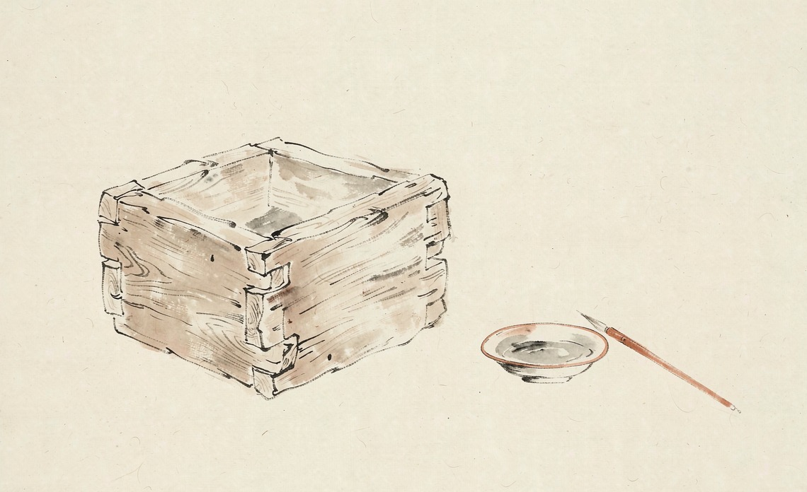
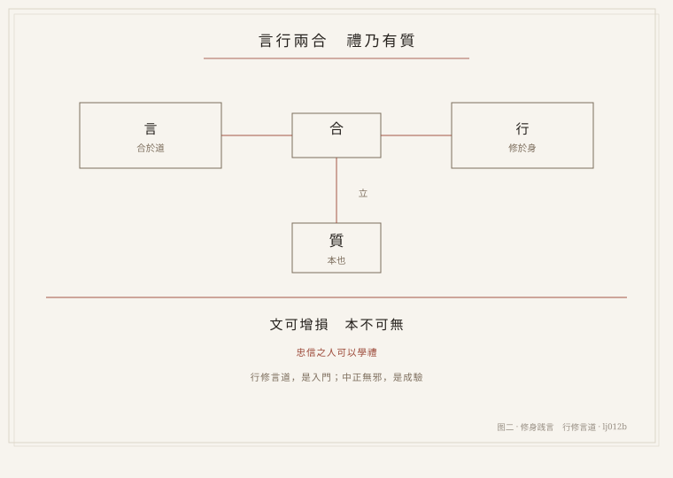

曲礼上 · 一·十三 · 第 12 课
上一课说不许言过其行；这一课给出正面：言行相副，就是礼的质。
说什么事：修身而履其所言，叫做善行；行已修、言合于道，这就是礼的本。
落在哪一层：义。这一句把「礼」从节目拉回人身上：礼有文有质，质在人。
为何编在此位：一·十言礼之能（四判），一·十一、一·十二言持礼者之戒；戒完了，须给出正面——什么叫够格。故一·十三言「质」。
【经】修身踐言，謂之善行；行修言道，禮之質也。
修身 疏以「忠信之行修」释「行修」。所修者是忠信之行，不是仪容，也不是声名。
践言 践，履也。说了就去做，如履其地，一步一脚。
善行 行读去声，指行事之迹。疏：「忠信之行修」，则所行皆善。
行修 行已修。
言道 郑注：「言道，言合于道也。」注意：不是「说出来的道理」，是「所说合于道」。一「合」字最实。
质 疏：「质，本也，则可与礼为本也。」质是本，不是简陋；礼以文饰，而本在忠信。
修身而履其所言，叫做善行；行已修、言合于道，这就是礼的本。
礼有文有质：文在节目，质在言行。言行相副，才够得上「礼」这个字。
第一层 一句的两半 「修身践言」说做，「行修言道」说成。前句以「言」为宾语（践言），后句以「道」为宾语（言道）——同一张嘴，前番是践，后番是合。疏把两句都归到「忠信」：忠信立，则言行皆有所本。
第二层 质是本，不是粗 今人读「质」多作质朴、粗糙，与「文」对立。疏解作「本」：礼以文饰，而质在其下；文可增损，本不可无。因为质是本，下文一·十五才敢说「道德仁义，非礼不成」——非文不成器，非本则器无所立。
第三层 陈澔的门槛 「人之所以为人，言行而已；忠信之人可以学礼，故曰礼之质也。」此语把门槛说清了：学礼不是先学仪，是先要有一箇可教之质。无质而学仪，学成的是样子。
第四层 方氏的始末 方氏以《曲礼》此言为「始」，《乐记》「中正无邪，礼之质也」为「终」：行修言道，是入礼之门；中正无邪，是礼成之验。同一「质」字，一在门外，一在门内。
与今日何干 今日「人设」二字最盛：言在前，行在后，甚或行不必有。此句的判法只有两条：说过的话有没有去做；做过的事合不合所说的道。两条都过，才有质；过一条，是半个人设。
| 左 | 右 |
|---|---|
| 修身践言：说过的去做 | 行修言道：做过的合道 |
| 质是本，不是粗 | 文可增损，本不可无 |
| 忠信之人可以学礼 | 无质而学仪，学成样子 |
| 行修言道，是入门 | 中正无邪，是成验 |

